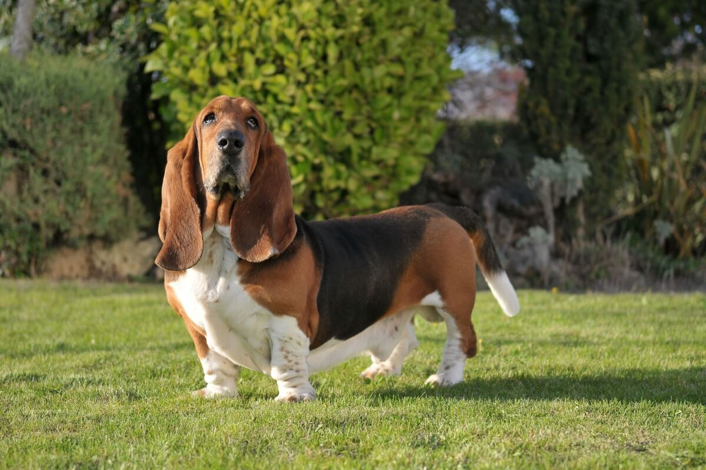

BASSET HOUND, desapareceu de casa a 2 dias, Por favor ajudem. Ele precisa de medicamentos contínuos ele é Cardíaco. Desapareceu prox. Metrô Paulista. Atende pelo nome de Toby.... Entrar em contato com 7777-7777 - Rose
ROXO- Cachorro encontrado na Lapa - SP, muito dócil, estava muito assustado. Contato com Fábio - 8888-9999
BRANCO- Perdi um cão dia 28 na rua Julia Rica as 17:00h, ele é o filhote do meu filho. Obrigado ! Contato com Luis - 7788-9999